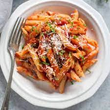

Penne Arrabbiata

Description
Penne Arrabbiata is a spicy tomato pasta dish originating from Rome, Italy.
The name "arrabbiata" comes from the Italian word "arrabbiare," which means "to get angry"
or "to become spicy," referring to the use of chili peppers in the sauce.
Ingredients:
- 1 pound penne pasta
- 4 tablespoons olive oil
- 4 cloves garlic, minced
- 1/2 teaspoon red pepper flakes (adjust to your spice preference)
- (1) 28-ounce can crushed tomatoes
- 1/2 cup chopped fresh basil
- Salt and freshly ground black pepper, to taste
- Grated Parmesan cheese, for serving
Steps
- Cook the penne according to package directions.
- While the pasta is cooking, heat olive oil in a large skillet over medium heat.
- Add garlic and red pepper flakes, cook for 30 seconds, stirring constantly.
- Add crushed tomatoes, bring to a simmer, and cook for 10 minutes, stirring occasionally.
- Season with salt and pepper to taste.
- Drain the pasta and add it to the sauce, tossing to coat.
- Stir in basil leaves.
- Serve immediately, topped with grated Parmesan cheese.